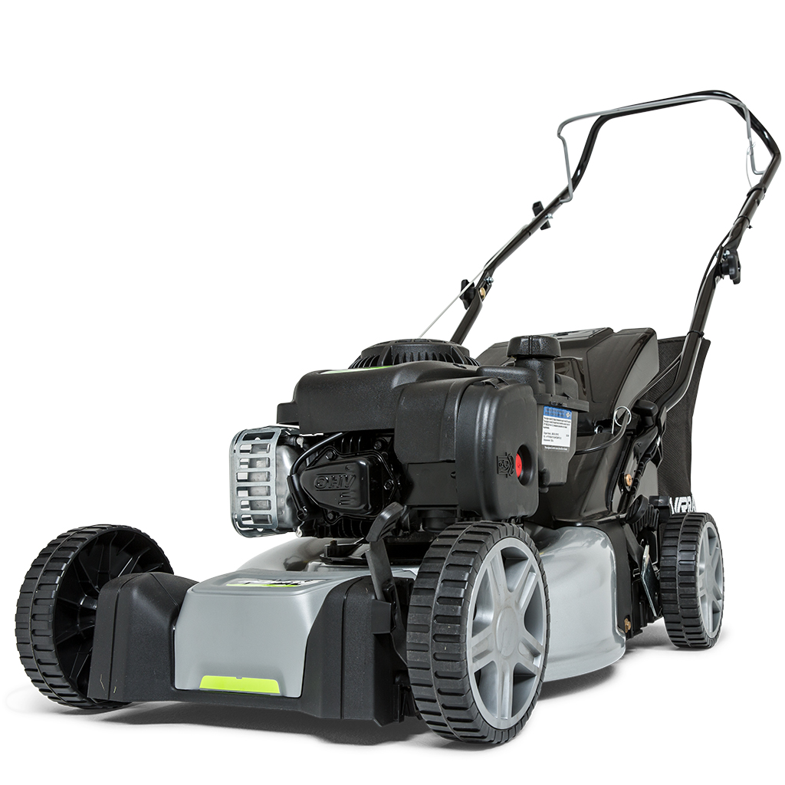

Murray EQ200
El Murray EQ200 es un cortacésped de gasolina potente y eficiente, ideal para jardines de gran extensión. Con un motor Briggs & Stratton 450E de 125 cc y un ancho de corte de 41 cm, este cortacésped ofrece un rendimiento excepcional en cualquier tipo de césped. Además, cuenta con un sistema de ajuste de altura de corte en 6 posiciones que permite adaptar el corte a tus necesidades específicas.
El diseño robusto y ergonómico del Murray EQ200 lo convierte en una opción ideal para usuarios que buscan un cortacésped duradero y fácil de manejar. El sistema de cuchillas para césped asegura un corte limpio y uniforme, incluso cerca de los márgenes.
No esperes más y adquiere tu Murray EQ200 para disfrutar de un jardín perfecto en todo momento.
Comprar ahora